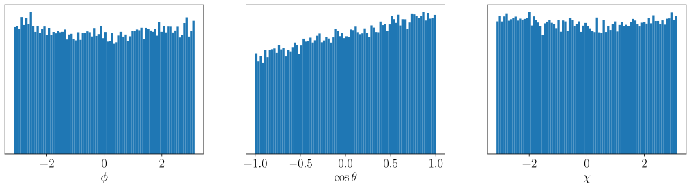
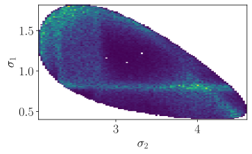

7.11. Determination of polarization#
Given the aligned polarimeter field \(\vec\alpha\) and the corresponding intensity distribution \(I_0\), the intensity distribution \(I\) for a polarized decay can be computed as follows:
with \(R\) the rotation matrix over the decay plane orientation, represented in Euler angles \(\left(\phi, \theta, \chi\right)\).
In this section, we show that it’s possible to determine the polarization \(\vec{P}\) from a given intensity distribution \(I\) of a \(\lambda_c\) decay if we the \(\vec\alpha\) fields and the corresponding \(I_0\) values of that \(\Lambda_c\) decay. We get \(\vec\alpha\) and \(I_0\) by interpolating the grid samples provided from Exported distributions using the method described in Import and interpolate. We perform the same procedure with the averaged aligned polarimeter vector from Section 5.6 in order to quantify the loss in precision when integrating over the Dalitz plane variables \(\tau\).
7.11.1. Polarized test distribution#
For this study, a phase space sample is uniformly generated over the Dalitz plane variables \(\tau\). The phase space sample is extended with uniform distributions over the decay plane angles \(\left(\phi, \theta, \chi\right)\), so that the phase space can be used to generate a hit-and-miss toy sample for a polarized intensity distribution. $$
We now generate an intensity distribution over the phase space sample given a certain value for \(\vec{P}\) [1] using Eq. (7.1) and by interpolating the \(\vec\alpha\) and \(I_0\) fields with the grid samples for the default model.
P = (+0.2165, +0.0108, -0.665)
I = compute_polarized_intensity(
*P,
I0=interpolate_intensity(PHSP, model_id=0),
alpha=interpolate_polarimetry_field(PHSP, model_id=0),
phsp=PHSP,
)
I /= jnp.mean(I) # normalized times N for log likelihood


7.11.2. Using the exported polarimeter grid#
The generated distribution is now assumed to be a measured distribution \(I\) with unknown polarization \(\vec{P}\). It is shown below that the actual \(\vec{P}\) with which the distribution was generated can be found by performing a fit on Eq. (7.1). This is done with iminuit, starting with a certain ‘guessed’ value for \(\vec{P}\) as initial parameters.
To avoid having to generate a hit-and-miss intensity test distribution, the parameters \(\vec{P} = \left(P_x, P_y, P_z\right)\) are optimized with regard to a weighted negative log likelihood estimator:
with the normalized intensities of the generated distribution taken as weights:
(eq:intensity-as-nll-weight)
such that \(\sum w_i = n\). To propagate uncertainties, a fit is performed using the exported grids of each alternative model. $$
P_GUESS = (+0.3, -0.3, +0.4)
The polarization \(\vec{P}\) is determined to be (in %):
with the upper and lower sign being the systematic extrema uncertainties as determined by the alternative models.
This is to be compared with the model uncertainties reported by [1]:
The polarimeter values for each model are (in %):
7.11.3. Using the averaged polarimeter vector#
Equation (7.1) requires knowledge about the aligned polarimeter field \(\vec\alpha(\tau)\) and intensity distribution \(I_0(\tau)\) over all kinematic variables \(\tau\). It is, however, also possible to compute the differential decay rate from the averaged polarimeter vector \(\vec{\overline{\alpha}}\) (see Average polarimetry values). The equivalent formula to Eq. (7.1) is:
$$
We use this equation along with Eq. (7.2) to determine \(\vec{P}\) with Minuit.
Using the averaged polarimeter vector \(\vec{\overline{\alpha}}\), the polarization \(\vec{P}\) is determined to be (in %):
The polarimeter values for each model are (in %):
7.11.3.1. Propagating extrema uncertainties#
In Section 5.6, the averaged aligned polarimeter vectors with systematic model uncertainties were found to be:
This list of uncertainties is determined by the extreme deviations of the alternative models, whereas the uncertainties on the polarizations determined in Section 7.11.3 are determined by the averaged polarimeters of all alternative models. The tables below shows that there is a loss in systematic uncertainty when we propagate uncertainties by taking computing \(\vec{P}\) only with combinations of \(\alpha_i - \sigma_i, \alpha_i + \sigma_i\) for each \(i \in x, y, z\).
Polarizations from \(\overline{\alpha}\) in cartesian coordinates:
Polarizations from \(\overline{\alpha}\) in polar coordinates:
7.11.4. Increase in uncertainties#
When the polarization is determined with the averaged aligned polarimeter vector \(\vec{\overline{\alpha}}\) instead of the aligned polarimeter vector field \(\vec\alpha(\tau)\) over all Dalitz variables \(\tau\), the uncertainty is expected to increase by a factor \(S_0 / \overline{S}_0 \approx 3\), with:
The following table shows the maximal deviation (systematic uncertainty) of the determined polarization \(\vec{P}\) for each alternative model (determined with the \(\overline{\alpha}\)-values in cartesian coordinates). The second and third column indicate the systematic uncertainty (in %) as determined with the full vector field and with the averaged vector, respectively. $$